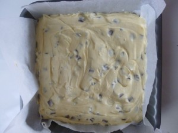
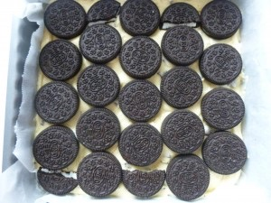
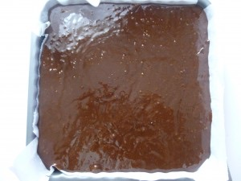
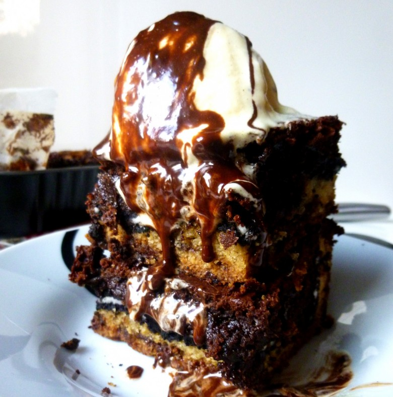

Le « Frédo »
Coucou tout le monde! Ici vous trouverez une recette ultra gourmande!!!
Il s’agit « tout simplement » d’un gâteau contenant à la fois du cookie, des oreos et du brownie!!!! Mmmmmmmmmh! J’ai décidé de l’appeler le « Frédo » car mon oncle qui s’appelle Fréderic m’a tout simplement fait passer la recette en me mettant au défi de le réaliser^^ Alors je me devais bien de lui rendre un hommage en publiant la recette sachant qu’il n’a même pas pu en gouter une seule part
Je pense sincèrement que tout le monde ne peut qu’aimer cet assemblage ultra gourmand mais je ne vous le cache pas il déborde également de calories!
Ingrédients
- beurre mou - 120g
- sucre - 240g
- oeufs - 2
- farine - 185g
- levure deshydratée - 2 sachets
- bicarbonate de soude - 1 càc
- sel - 1càc
- pépites de chocolat au lait - 125g
- extrait de vanille - 1 càs
- paquet d'oreos - 1
- beurre mou - 250g
- chocolat - 400g
- sucre - 300 g
- farine - 150 g
- levure chimique - 1/2 sachet
- oeufs - 6
- sel - 1 càc
- vanille - 1 càs
- glace vanille
- coulis de chocolat
Instructions
- Battre pendant 5 min le beurre ramolli et le sucre
- Ajouter les œufs et l'extrait de vanille et mélanger à nouveau
- Dans un autre récipient mélanger la farine la levure le bicarbonate et le sel
- Ajouter petit à petit la farine au premier mélange
- Pour finir incorporer les pépites de chocolat (perso j'ai pris des chunks car j'adore ça!!)
- Mélanger jusqu'à obtenir un mélange homogène
- Faire fondre le beurre avec le chocolat au bain marie
- Verser le sucre et bien mélanger
- Ajouter les œufs un à un et l'extrait de vanille
- Tamiser la farine avec la levure et le sel
- Additionner le mélange de farine et le mélange avec le chocolat
- Mélanger et recouvrir les oreos avec
- Enfourner le gâteau recouvert de papier d'aluminium 30 min à 180° puis 15-20 min sans le papier d'aluminium.



